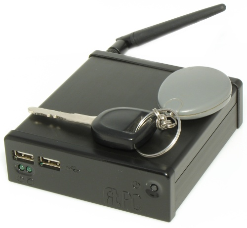
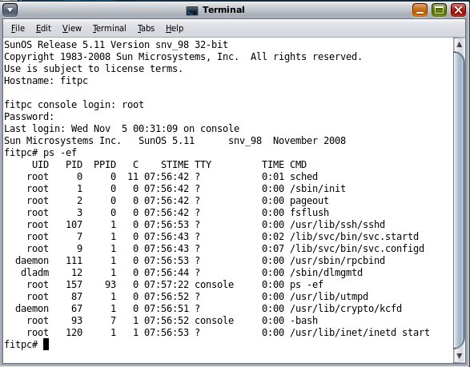
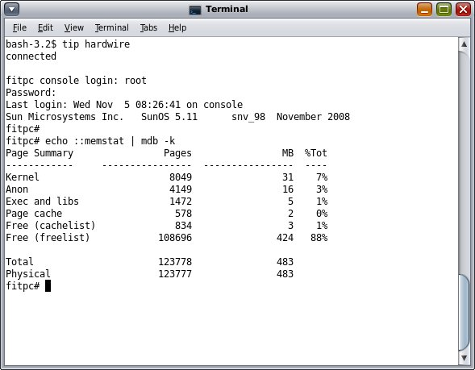

OpenSolaris on the Smallest System Yet?
By Jim Connors 5 November 2008
One of my compadres forwarded me this link from CompuLab, an Israeli company which has created this real small, very energy efficient PC. It may just be the smallest full-featured system to date.
 I'm a sucker for these types of things, and thought it would be interesting to get a reduced footprint version of OpenSolaris up and running on it. Haven't gotten around to playing with wi-fi, or for that matter the graphics (as the reduced footprint version of OpenSolaris has no windowing system), but every indication points to a system that doesn't require any magic incantations to get OpenSolaris up and running. Here are some of the specs| CPU: AMD Geode LX800 500MHz |
| Chipset: AMD CS5536 |
| Display: Integrated Geode LX display controller up to 1920x1440 |
| Memory: 512MB DDR 333MHz soldered on-board |
| Hard disk: 2.5” IDE 60GB |
| Ports: RJ45 Ethernet port 100Mbps WLAN 802.11b/g 54Mbps 3 x USB 2.0 HiSpeed 480Mbps mini RS-232 (cable available from CompuLab) VGA DB15 Stereo line-out audio (headphones) Stereo line-in audio / Mic |
The system has a serial port, and upon request, CompuLab will
provide the required custom serial cable. By instructing GRUB
to redirect the console to the serial port, you can connect the
serial cable to another system and communicate directly with the
console. To get a rough idea of how to accomplish this,
check here.
The screenshots below show that from an OpenSolaris terminal
window, you can use the tip(1) command
to accomplish this.
So the question is, how minimal is this configuration? Issuing `ps -ef' shows that only 14 processes are currently running, of which I'm sure there's an opportunity to eliminate one or two if need be.
To give you an idea of how much RAM is currently consumed, here's what issuing the 'memstat' macro under mdb(1m) yields:
Who says Solaris can't fit in small places?